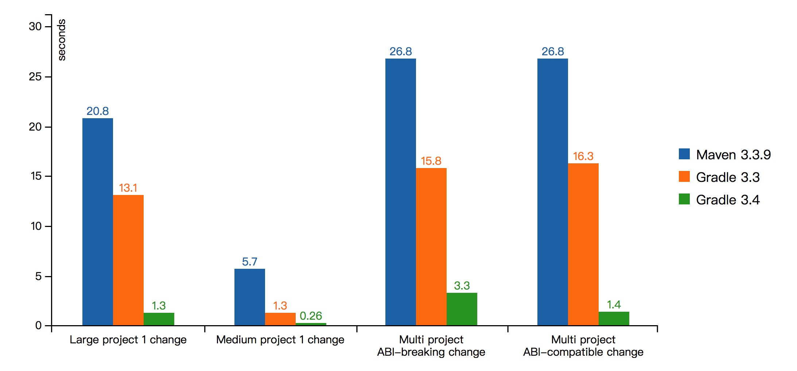
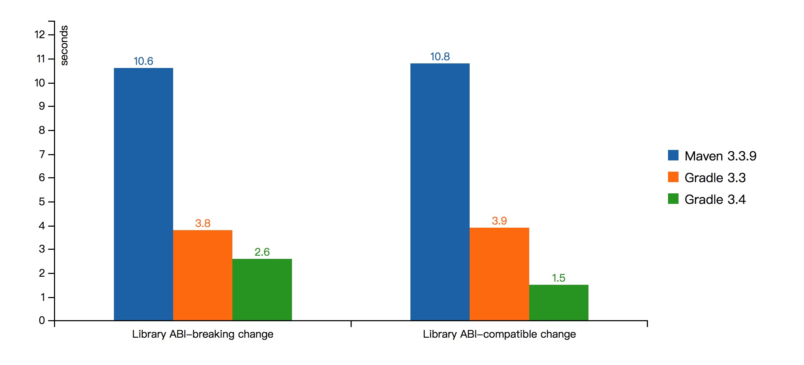

本文翻译自Gradle 3.4发布时官方发表的技术博客。虽然现在看来Gradle 3.4已经是很老的版本了，但这篇博客中干货满满，解答了我关于Gradle的不少疑问，所以很有必要翻译一下作为学习！
这篇文章解答了以下几个问题：
- 什么是增量编译?
- Compile avoidance跟增量编译有何区别？
- 为什么修改常量会影响编译编译？
- 什么是annotation processor?
- 为什么annotation processor会影响增量编译？该如何解决？
- 为什么要用implementation和api替代compile，不然会有如下警告？
1 | WARNING: Configuration 'compile' is obsolete and has been replaced with 'implementation' and 'api'. |
这篇文章提到了几个有价值的知识点：
- Making a small change should never result in a long build
- Compile avoidance is different from incremental compilation
- Compile avoidance - ABI不兼容的修改，需要重新编译；非ABI不兼容的修改，不需要重新编译
- Incremental compilation - 分析类之间的依赖关系，只编译那些发生了变化的类
- Not all constants are born equal: a constant value of 0 is much more likely to trigger a full recompilation when changed, than a constant value 188847774
- An annotation processor is a Java compiler plugin. It is triggered whenever the Java compiler recognizes an annotation that is handled by a processor
- The dependencies of the annotation processor should never leak into your compile classpath
- The api bucket is used to declare dependencies that should transitively be visible by downstream consumers when they are compiled.
- The implementation bucket is used to declare dependencies which should not leak into the compile classpath of consumers (because they are purely internal details).
好吧。开始翻译了。
我们很自豪地宣布刚刚发布的Gradle 3.4已经为各种用户构建Java应用进行了非常大的改进。这篇博客将解释我们修复，改进以及增加的各种细节。我们着重关注：
- 快速增量构建
- 消除compile classpath泄漏问题
我们极大地改进了构建速度。这是我们的测量结果：

这个基准测试是公开的，你自己可以动手试验一下。该基准测试项目是根据真实用户反馈的问题虚构的一个项目。在持续开发过程中增量构建很重要(即，小的改动不应导致长时间的构建)
以那些在单个项目中有很多源码的场景为例：
- 修改庞大项目中的一个文件，重新编译项目
- 修改中型项目中的一个文件，重新编译项目
以多项目构建为例：
- 在子项目中以ABI兼容的方式进行修改(比如，修改了一个方法中的代码，但没有修改方法签名)，重新编译项目
- 在子项目中以ABI不兼容的方式进行修改(比如，修改了一个方法的签名)，重新编译项目
对上述各个场景，Gradle 3.4构建速度快多了。接下来看看我们是如何做到的。
Compile avoidance
对Java来说，升级到Gradle 3.4就可以享受到它最大的改进之一： compile avoidance 。Compile avoidance不同于增量编译，我们后面会详细解释。那么如何理解compile avoidance呢？很简单。假设你的app项目依赖core项目，而core项目本身又依赖utils项目。
在app项目中有以下代码：
1 | public class Main { |
在core项目中有以下代码：
1 | public class WordCount { // WordCount lives in project `core` |
在utils项目中有以下代码：
1 | public class IOUtils { // IOUtils lives in project `utils` |
现在，要修改IOUtils的实现。比如，修改eachLine方法，使用utf8编码而不是缺省编码：
1 | public class IOUtils { // IOUtils lives in project `utils` |
现在重新构建app项目，会发生什么情况？utils需要重新编译，而由于依赖关系它又会触发core和app重新编译。乍一看，很合理。但真的合理吗？
IOUtils的修改只是内部细节的改变。eachLine的实现变了，但它的公开API并没有变化。之前已经编译好的依赖IOUtils的class文件其实仍然有效。Gradle现在可以识别这一点了，这意味着当你修改eachLine时，Gradle只需要编译utils项目，不必再编译core和app了。这个例子看似简单，其实是一种很常见的模式：core项目通常被很多子项目共享，而每个子项目又依赖于其他子项目。core项目的改动会导致所有项目都要重新编译。Gradle 3.4中这种情况不存在了，即，Gradle可以判断是否ABI(Application Binary Interface)不兼容的修改，只有ABI不兼容的修改才会引起所有项目重新编译。
这就是我们所谓的compilation avoidance。即使一些情况下重新编译不可避免，Gradle 3.4的增量编译功能也会让编译速度更快。
改进的增量编译
长久以来，Gradle有一个实验性的Java增量编译器。在Gradle 3.4中，这个编译器不仅被确定下来，而且我们增加了其稳定性并提升了性能。现在就开始使用增量编译吧：我们不久之后会缺省启用该功能。要使用增量编译，只需在compile选项中设置参数即可：
1 | tasks.withType(JavaCompile) { |
在core项目中增加以下类：
1 | public class NGrams { // NGrams lives in project `core` |
在utils项目中增加以下类：
1 | public class StringUtils { |
假设我们修改了StringUtils类并且重新编译项目，很明显我们只需要重新编译StringUtils和NGrams类，而不必编译WordCount类。NGrams是独立于StringUtils的类。而WordCount并没有使用到StringUtils，那为什么要重新编译它呢？这就是增量编译要解决的问题：分析类之间的依赖关系，只编译那些本身发生改变的类，或者其依赖项发生改变的类。
你之前使用过Java增量编译器时可能发现它在处理带有常量的类的修改时并不那么智能。比如，这个类包含一个常量：
1 | public class SomeClass { |
如果这个类被修改，Gradle会重新编译项目中的所有类以及依赖这个项目的所有项目。原因是这样的：你要知道，Java编译器会对常量进行内联处理。当我们分析编译结果时，在字节码中会发现它包含字面量123，但无法知道这个字面量是在哪里定义的。可能是这个类自己定义的，也有可能是它的某个依赖定义的。Gradle 3.4开始，我们让这里的处理更为智能，即，只编译那些可能受影响的类。换句话说，如果只是这个类变了，而其中的常量并没有变，不需要重新编译所有类。类似地，如果是常量变了，如果依赖项的字节码中并不包含旧的常量值，那么也就不必对其重新编译：只编译那些包含旧常量值的依赖。这也意味着并不是所有的常量生而平等，修改一个值为0的常量比起修改一个值为188847774的常量，前者更可能触发全量编译。
增量编译器现在使用Gradle daemon中的内存缓存，所以速度比过去要快：从Java类中提取ABI是一个昂贵的操作，而过去只对其进行disk缓存。
所有这些增量编译改进再加上前面说到的compile avoidance，Gradle现在重新编译Java代码已经快多了。值得一提的是，这些改进对外部依赖也有效。假设你从foo-1.0.0升级到foo-1.0.1，如果这两个库之间的差异仅仅是修改bug，并没有改变API，那么compile avoidance也会起作用，所以外部依赖的变化并没有让你的代码重新编译。当然，如果是外部依赖中的API发生了变化，Gradle的增量编译器会在类级别上进行分析，只进行必要的重新编译。
annotation processor
annotation processors是一种强大的机制，可以通过注解的方式生成代码。典型的使用场景包括依赖注入(比如Dagger)，或者是减少样板代码(比如，Lombok, Autovalue, Butterknife)。但是使用annotation processor对构建性能有很多负面影响。
annotation processor原理
annotation processor基本上可以理解成一个Java编译器插件。在Java编译器识别到一个可被processor处理的注解时就会触发这个processor。从构建工具角度而言，它是一个墨盒：我们并不知道annotation processor到底做了什么操作，尤其是annotation processor生成了什么文件，这些文件放在哪里。
因此一旦annotation processor的实现发生了变化，Gradle需要重新编译所有东西。这不算太糟糕，因为不经常发生。但问题是没有明确声明annotation processor时Gradle只能关闭compile avoidance功能。我们来看一下是怎么回事。现在的annotation processor一般都被添加到compile classpath中。
当Gradle发现一个jar文件中包含annotation processor时，它没法判断compile classpath下的其他jar文件是否被那个annotation processor使用。要知道，annotation processor本身也可能是有依赖的。这意味着compile classpath的任何变化都可能以某种Gradle没法理解的方式影响到annotation processor的行为。所以compile classpath发生任何变化都会触发全量编译。
但这个问题有解决办法。
明确声明annotation processor classpath
annotation processor作为编译器插件，使用到外部依赖，一定会影响到compile classpath，不是吗？答案是否定的。annotation processor的依赖不应该影响到compile classpath。这也正是为什么javac会提供-processorpath选项的原因，它用来区别于-classpath。你可以使用如下方式在Gradle中声明processorpath。
1 | configurations { |
这段代码中创建了一个apt配置，它包含所有被使用的annotation processor以及annotation processor自身的依赖。然后将apt设置给annotationProcessorPath。它有几个作用：
- 一是关闭了在compile classpath中自动检查annotation processor的功能，这会让任务启动速度变快(更快的up-to-date检查)
- 二是会用到Java编译器的
processorpath选项，可以正确地将compile依赖跟annotation processor自身的依赖区分开来 - 三是会开启compile avoidance：通过明确声明annotation processor，就能确定classpath中找到的所有东西都是二进制接口(与annotation processor没半点关系)
特别是，你会注意到Dagger是如何明确地将其编译器与注解分离开来的：我们使用dagger-compiler作为annotation处理过程的依赖，而将dagger(即注解本身)作为compile依赖。
但是，有些annotation processor并没有将这些关注点恰当地分离(比如Lombok)，所以导致其实现类被泄露到compile classpath中。但这种场景下compile avoidance仍然起作用：你只需要将同一个jar同时放在apt和compileOnly配置中。
带annotation processor的增量编译
上面说过，有annotation processor时，Gradle并不知道它生成了什么文件，也不知道它基于什么条件在哪里生成了文件。所以有annotation processor时Gradle会关闭Java增量编译器，即使你像刚才那样明确地声明annotation processor。但其实优化这种场景，限制annotation processor的影响，让它只影响到那些真正用到annotation processor的源码。简而言之，你要声明一个不同的source set，这个source set有不同的compile task，会用到annotation processor，而其它的compile task没有任何annotation processor：
- 对那些没有用到的annotation processor的类进行修改时，增量编译仍然有效
- 对那些有用到annotation processor的类进行修改时，会触发全量编译，但只对对应原source set进行全量编译
这里是一个例子：
1 | configurations { |
当然实践中是否容易进行source set隔离，还要看main在多大程度上依赖processed中的类。当然我们也在探索如何在有annotation processor时开启增量编译，所以今后它将不再是一个问题。
Java库
很久以来Gradle就在解释为什么Maven依赖模块有问题，但没有具体例子的话很难认识这一点，因为用户已经习惯这个问题并且认为它是正常的。尤其是pom.xml文件既用于构建组件，也作为发布时的元数据。Gradle的方式有所不同，它有一个构建脚本用于构建组件以及发布组件，可将组件发布到Maven，Ivy或任何其它库。发布的文件中包括该如何使用的元数据，也就是说我们将用于构建组件的脚本跟该如何使用最终产物的元数据清晰地分离了。将这两个角色分离是非常重要的，这允许Gradle 3.4对Java依赖管理添加基础改进。用户可以从这个基础改进中获得其他好处。首先是性能改进，它是对上述其他性能特性的补充。额外其他好处也很多。
一直在用错误的方式
当我们在构建Java项目时，有两件事情需要考虑：
- 我要怎样编译项目
- 我要怎样运行项目
所以我们很自然地想在在两种不同的范围里声明依赖：
compile- 编译项目时的依赖runtime- 运行项目时的依赖
过去这些年Maven和Gradle都这么用。但我们一开始就知道这样做是错的。这种视角过于简化，因为它没有考虑你的项目的消费者。要强调的是，Java世界里至少有两种项目：
- 应用，它是可以独立运行的，并且不向外暴露任何API
- 库，它被其他库或应用使用，用作构建软件的小部件，所以要向外暴露API
这种只考虑两种配置(Gradle)或者说两种范围(Maven)的简单方式，其问题在于没有考虑到具体的实现跟公开的API是两码事。换句话说，作为组件，你却将自己的编译依赖泄漏出下游消费者了。
假设我们正在构建一个IoT应用home-automation，它依赖heat-sensor库。heat-sensor库的compile classpath中包含有commons-math3.jar和guava.jar。所以home-automation的compile classpath中也将包含commons-math3.jar和guava.jar。有以下几种结果：
home-automation可能会使用commons-math3.jar和guava.jar中的类，但没意识到这些类其实是heat-sensor的传递依赖(传递依赖泄漏)- 导致
home-automation的compile classpath变得更大：- 依赖解析，up-to-date检查，classpath分析，以及
javac花费的时间变长 - classpath发生变化的可能性变大，导致Gradle的compile avoidance功能失效的可能性变大。尤其是当你又使用了annotation processor，Gradle的增量编译不起作用。最终引起非常大的开销
- 依赖解析，up-to-date检查，classpath分析，以及
- 增加了依赖地狱的可能(dependency hell, classpath中包含同一依赖的不同版本)
但最糟糕的问题其实是guava.jar纯粹是heat-sensor的内部细节，而home-automation使用guava.jar中的类仅仅是因为在compile classpath中找到了这些类。heat-sensor的改进和演化变得困难，因为会破坏它的消费者(译者注：这里其实是说，如果哪天发现heat-sensor其实没必要使用guava.jar，或者有比guava.jar更好的库了，但你没办法从heat-sensor中移除或替换guava.jar，因为home-automation也依赖guava.jar)。依赖泄漏是很可怕，它引起不必要的向后兼容问题，导致软件演化过程变得缓慢或是特性僵化。
我们知道自己一直做错了，现在是时间修复这个问题了。所以引入了新的Java Library Plugin。
Java Library Plugin
从Gradle 3.4开始，如果你构建Java library，表明目标是构建一个被其他组件消费的组件(即作为其他东西的依赖)，这时应该用apply plugin: 'java-library'替代apply plugin: 'java'。
它们基本相同。但java-library插件提供API的概念。现在我们对heat-sensor库进行迁移，它自身有两个依赖：
1 | dependencies { |
你看了heat-sensor的代码后会发现，commons-math3用作公开的API，而guava只是单纯的内部实现。
这意味着假如明天heat-sensor想从Guava迁移到另一个集合库，它并不会对其消费者有任何影响。但实践中我们只有明确区分两种依赖才可能达到这一目的：
1 | dependencies { |
api用于声明需要依赖传递，应当对下游消费者可见的依赖。而implementation用于声明不应该泄漏到消费者compile classpath的依赖(因为它们纯粹是内部细节)。
现在当编译heat-sensor的消费者时，它会发现compile classpath中可以找到commons-math3.jar，而没有guava.jar。如果home-automation想使用Guava库中的类，会发现有编译错误。作为消费者home-automation需要自己决定它是否真的需要引入Guava依赖。另一方面，如果home-automation想使用Apache Math3中的类，是可以的。
更好的POMs
implementation什么时候有用呢？它只在运行时有用！这也是为什么现在选择发布到Maven库时Gradle生成的pom.xml要比Maven自己生成的pom.xml更清晰的原因。来看一下maven-publish插件生成的heat-sensor：
1 |
|
上面就是发布的pom.xml文件，它被消费者使用。文件告诉我们什么呢？
compileclasspath中需要有commons-math3，才能依赖heat-sensor进行编译runtimeclasspath中需要有guava，才能依赖heat-sensor运行
这跟编译组件和消费组件时使用同一个pom.xml非常不同。因为编译heat-sensor时，compile classpath也要有guava才行。简单来说：相比Mavne，Gradle生成更好的POM文件，因为它准确区分生产者和消费者。
更多场景
你可能知道Gradle 2.12引入的compileOnly，它用于声明那些只在编译组件时需要而在运行期不需要的依赖(典型的场景是将一个库嵌入到fat jar中，shadowed)。java-library插件提供一个从java插件平滑迁移的路径：如果你是构建应用，继续使用java插件。否则，如果是library，使用java-library插件。但无论哪种情况都要遵守以下规则：
- 使用
implementation替代compile - 使用
runtimeOnly替代runtime - 解析组件的runtime时，使用
runtimeClasspath替代runtime
对性能的影响
为了演示对性能的影响，我们对两种场景添加了基准测试：
- 在library中进行ABI兼容的修改，然后重新编译
- 在library中进行ABI不兼容的修改，然后重新编译
只有Gradle 3.4才支持library的概念，所以在Gradle 3.4中使用Java Library Plugin。为了让结果更清晰，基准测试中不使用增量编译(增量编译更快)

可以看到模型变好之外，性能也有很大提升！
总结
Gradle 3.4为Java生态系统带来了巨大的改进。更好增量编译以及compile avoidance会大大提升你的生产率，而清晰地分离API依赖和实现依赖能避免意外的依赖泄漏，从而获得更好的软件模型。我们还会带来更多好处。特别是，分离API和实现是Java 9成功的关键 Project Jigsaw。今后我们还会添加给API指定package的方法，以更接近Jigsaw的做法，且支持更老的JDK。
另外，Gradle 4.0将提供build cache，它也能从本文中描述的改进中受益：它是允许在本地机器或网络中复用和共享构建任务结果。典型的使用场景包括切换分支，或者check out一个已被同事或CI编译过的项目。换一种说法就是，如果你或者谁已经构建了某个你需要的东西，你可以从缓存中得到它，而不必在本地重新构建一次。而这要求build cache需要为java compile task生成cache key，key的生成与compile classpath相关。Gradle 3.4的改进会忽略跟消费者不相关的修改(除非是ABI不兼容的修改)，从而让cache key更容易命中。
我们鼓励现在就更新到Gradle 3.4，并且看下Java Library plugin的文档，去看看你能用它干什么吧！
更新：补充另外一些内容的翻译，内容来自Gradle 4.10文档
补充内容
Java增量编译
Gradle 4.10缺省开启一个复杂的Java增量编译器。
它有以下好处：
- 增量构建速度更快
- 变更的class文件数量最小。不需要重新编译的类在输出目录中保持不变。一个场景是使用JRebel时，变更的类越少，JVM就能更快地使用变更后的类
为了有助于理解增量编译是如何进行的，下面稍加总结：
- Gradle会重新编译所以被某个变更 影响 的类
- 一个类被修改，或者它依赖于一个受影响的类，就认为它受到 影响 。注意，不管依赖的类是在同一个项目，还是另一个项目或者外部库，规则都一样
- 类的依赖是根据字节码中的类型引用确定的
- 由于常量被内联，对常量进行任何修改都会导致Gradle重新编译所有代码。出于这个理由，你应该尽可能少用常量，或者将常量替换为静态方法
- source-retention级别的注解在字节码中不可见，所以修改source-retention级别的注解会导致全量编译
- 通过使用好的软件设计法则，比如松耦合，可以改进增量编译性能。比如，在具体类和其使用者之间引入接口，只有当接口变化时使用者才会被重新编译，具体类变化时使用者并不需要重新编译
- 类分析结果保存在项目目录中，所以clean之后首次编译速度会比较慢。构建服务器上应当关闭增量编译功能
已知问题
- 如果一个由于编译错误导致compile task失败，Gradle下次会进行全量编译
增量annotation处理
从Gradle 4.7开始，增量编译器还支持增量annotation处理。Annotation processor需要根据这个特性进行优化，否则仍然会触发全量编译。
用户可以从--info日志(以gradle --info方式运行)中找到是哪个annotation processor触发全量编译的。在compile task中配置自定义的executable或javaHome，增量annotation处理会失效。
让annotation processor支持增量处理
(译者注：这一块的知识不是很了解，所以翻译得惨不忍睹，建议略过直接看原文)
请先阅读incremental Java compilation相关内容，因为增量annotation是基于它的。
Gradle为两类anntation processor提供增量编译支持：”isolating”或”aggregating”。可以参考以下内容来确定你的annotation processor属于哪一种。
可以在processor的META-INF目录中使用文件注册processor。格式是每行一个processor，processor类全名以及它的类型，两者用逗号分开
例： 注册增量annotaion processor
1 | // 所在文件 processor/src/main/resources/META-INF/gradle/incremental.annotation.processors |
如果只能在运行时确定是否增量处理，可以在META-INF描述文件中将其声明为”dynamic”，并且使用Processor#getSupportedOptions())方法在运行返回真正的类型。
例：动态注册增量annotation processor
1 | // processor/src/main/java/ServiceRegistryProcessor.java |
无论哪种类型，都应该遵守以下限制：
- 它们必须使用Filer API生成文件。使用任何其它方式生成文件都会引起后续的静默失败，因为生成的文件无法被正确清理干净。如果你的processor使用其它方式生成文件，那它就无法进行增量处理
- 它们不能依赖编译器特定的接口，比如com.sun.source.util.Trees。Gradle包装了这些API，所以尝试强制转换到编译器特定类型时会失败。如果你的processor这么做，那它就无法进行增量处理
- 如果它们有使用Filer#getResource)，Gradle会全量编译。见Filer#getResource)
- 如果它们有使用Filer#createResource)，Gradle会全量编译。见gradle/issues/4702
“isolating” annotation processor
这是最快的一种类型，它们以隔离的方式寻找每个注解元素，为它生成文件或者验证信息。比如EntityProcessor可以为每个带有@Entity注解的类型生成<TypeName>Repository。
例：isolated annotation processor
1 | // processor/src/main/java/EntityProcessor.java |
isolated annotation processor有以下限制：
- 它们必须基于AST中的信息为注解元素做判断(代码生成，验证信息)。这意味着可以分析类型的父类，方法的返回值，注解等等。但不能根据不相关元素做判断。这么做会引起静默失败，因为后面几乎无法重新编译文件。如果processor需要根据其他不相关元素来联合进行判断，需要将processor标记为”aggregating”
- 它们必须为使用
FilerAPI生成的每个文件提供一个originating element。如果是0个或多个，Gradle会全量编译
如果一个源文件被重新编译，所有由这个文件生成的源文件也会被重新编译。当一个源文件被删除，所以由这个文件生成的源文件都会被删除。
“Aggregating” annotation processors
它们可以将多个源文件合并到一个或多个文件中。比如，ServiceRegistryProcessor可以使用一个方法为每个带@Service注解的类型创建一个单独的ServiceRegistry
例：An aggregating annotation processor
1 | // processor/src/main/java/ServiceRegistryProcessor.java |
“Aggregating” processor有以下限制：
- 它们只能访问
CLASS或RUNTIME注解 - 如果用户使用
-parameters参数编译，它们只能读取参数名字
Gradle总是重新处理(但是重新编译)所有的注解文件。Gradle总是重新编译processor生成的任何文件。
Compile avoidance
如果被依赖的项目发生ABI兼容的修改(即只有private API改变)，则对应的java compilation task被认为是up-to-date的。这意味着如果A项目依赖B项目，B中的一个类发生ABI兼容的修改(通常是修改了一个方法中的代码)，那么Gradle不会重新编译A项目。
一些不影响公开API修改以及会被忽略的修改：
- 修改方法中的代码
- 修改注释
- 添加，移除，修改private方法、字段或内部类
- 添加，移除，修改资源
- 修改classpath中的jar文件名或目录名
- 重命名参数
如果compile classpath中包含annotation processor，compile avoidance功能会失效，因为对于annotation processor而言，代码的具体实现是有影响的。为了避免这种问题，annotation processor应该在annotationProcessor中声明。Gradle 5.0将忽略compile classpath中的annotation processor。
1 | // build.gradle |